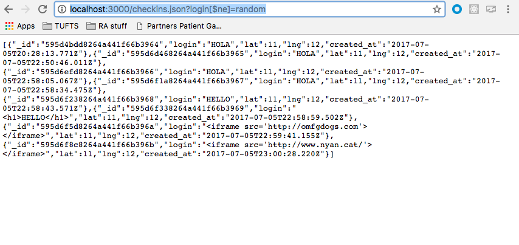

Cross-Site Scripting
- Issue found: when POST is used on the /sendLocation page
- Severity: High -- this flaw is very dangerous because it allows malicious scripts to be injected into the application which may be trusted. The script could be used to spam, or used for more malicious purposes like gathering sensitive information. It may be used to bypass access controls.
- Data submitted via the POST API is not escaped, so somebody can submit any HTML
or script in place of a "check in". It is easy to inject using curl,
for example executing
curl --data "login=< iframe src='http://www.nyan.cat/'>&lat=11&lng=12" http://localhost:3000/sendLocationorcurl --data "login=< iframe src='http://omfgdogs.com'>< /iframe>&lat=11&lng=12" http://localhost:3000/sendLocationorcurl --data "login=< h1>HELLO< /h1>&lat=11&lng=12" http://localhost:3000/sendLocationetc. will inject that into the page. The result:
- The issue of XSS can be resolved by escaping user input. You can escape HTML characters like (&, <, >, " , ') with encoding. You should also escape JavaScript, JSON values, CSS, URLs. You should also use a library such as HtmlSanitizer to sanitize HTML Markup.
Injection Attack
- Issue found: when GET is used on the /checkins.json page
- Severity: High-- an injection attack is a huge security vulnerability because it allows attackers to access or tamper with data.
- An injection attack can be used to dump the contents of the database to the attacker. For example, using [$ne], a negation query, like http://localhost:3000/checkins.json?login[$ne]=random, sends a JSON and obtains access of all the data in the database: 
- Ways injection attacks can be prevented: SQL injection can be avoided by implementing parametrized statements instead of embedding user input. Another way is escaping, similarly to before, characters that have a certain meaning in SQL. Another way is to limit database permissions. NoSQL injection vulnerabilities in MongoDB can also be tested for.
Access-Control-Allow-Origin: *
- Issue found: on the /sendLocation page
- Severity: Moderate-- Responding with Access-Control-Allow-Origin: * allows the requested resource to share with every origin. This is ill-advised because it is a big security risk, however it is easily avoided with implementing a different CORS response.
- Setting the Access-Control-Allow-Origin header to * basically assumes a wild card domain, meaning CORS can be used in any way. This allows for data leakage because it means any site can send a request to the application and access the server's response. When you allow this type of resource sharing for every resource instead of selected resources, it poses a security risk because the requests triggered by the outside resource will be able to use any authentication implemented in the application. This wild card is generally not appropriate and should be avoided.
Conclusion
Issues with this application make it easy to abuse the interface and the data, making the application untrustworthy and unusable. Following the recommendations given will lower vulnerability to attacks. Most changes are fairly easy to implement. Even with these in place, and certain parameters in place that allow only ceratin user input (ex. only strings allowed as logins and only integers as coordinates), users can still enter any credentials, so it may not be accurate. Besides that, the security vulnerabilities in this application are easily fixable.